AR(N)AN / The Floating Urban Atlas
A blue sky above the living landscape.
Historical R0-A2 gallery. Open the current R0-A3 detail pass and seven matched comparisons.
R0-A2 polishes the existing island: atmospheric depth, varied tree growth, localized geology, understory and trail materials. The exact upper terrain, six routes, reserved coordinates and research remain intact.
Human visual review pending. Target average ≥4/5, no category below 3/5. No human score is assigned. Stop here before R0-B architecture.
Sixteen unretouched native browser captures, all 1280×720. Each pair uses matching camera position, orientation, FOV, aspect and player placement. Lighting changes are part of the polish; cloud drift is not synchronized. Open either image for full size. Exact camera evidence.
01 / Full island aerial
Blue lower sky separates the landmass from the background. Groves, ridge, paths and localized rock formations remain fully visible.

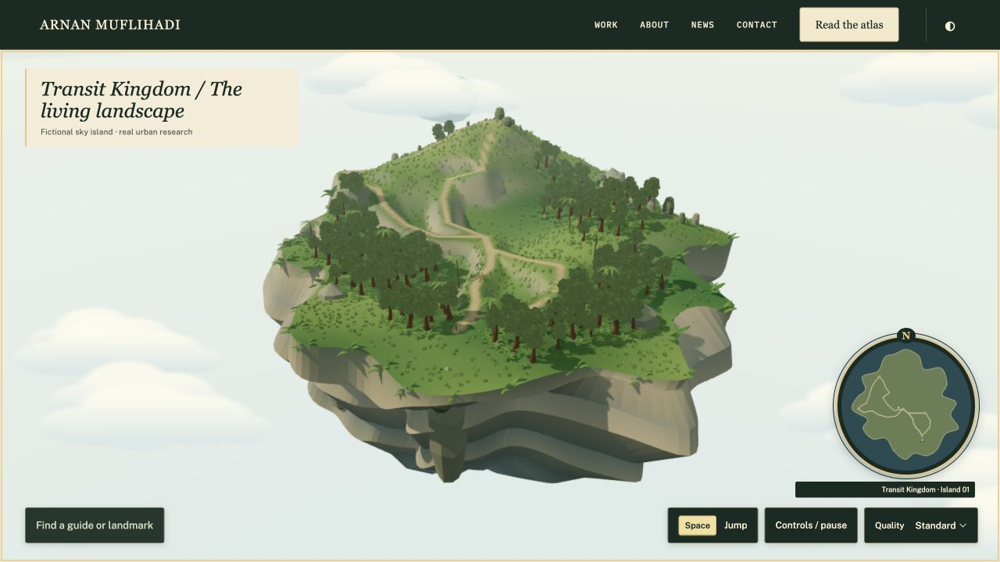

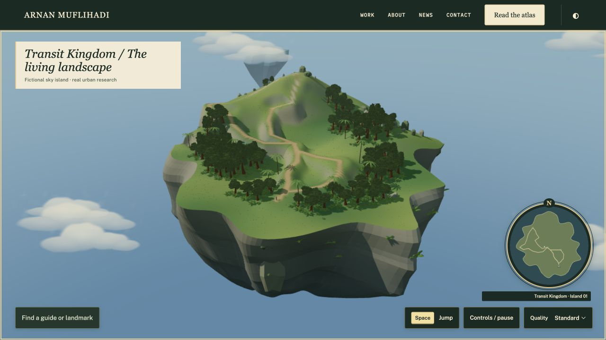
02 / Profile and underside
Continuous shelves are reduced to tapered faces and regional ledges. Clouds sit at several elevations; distant islands have different profiles.

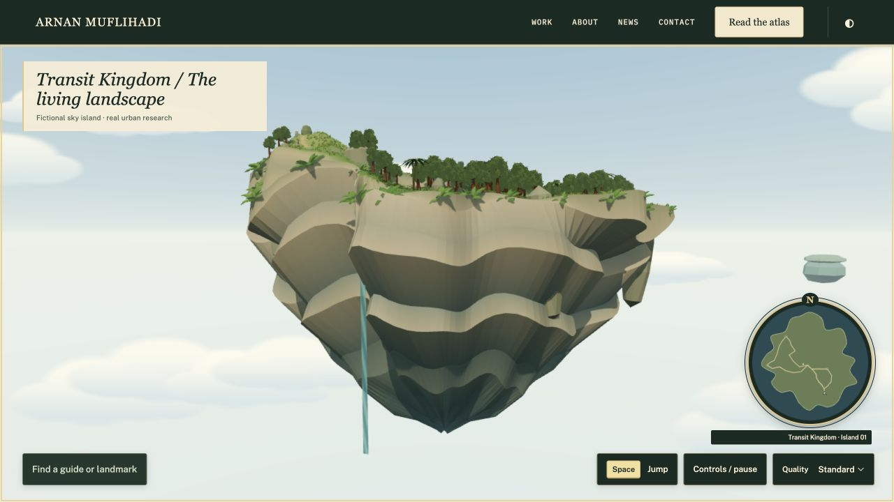

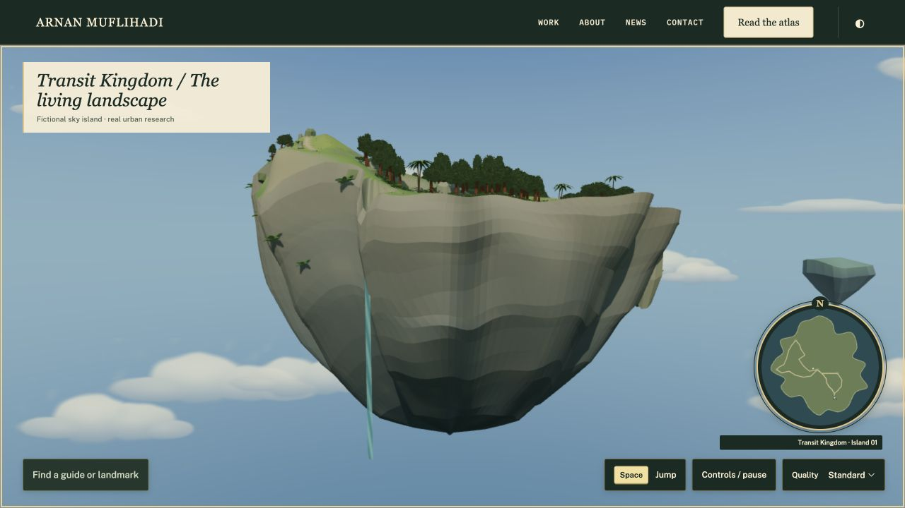
03 / Low-angle cliff detail
Actual closed geometry, restrained strata and selectively attached ferns. Broad low-poly faces and the inherited waterfall ribbon remain review points.

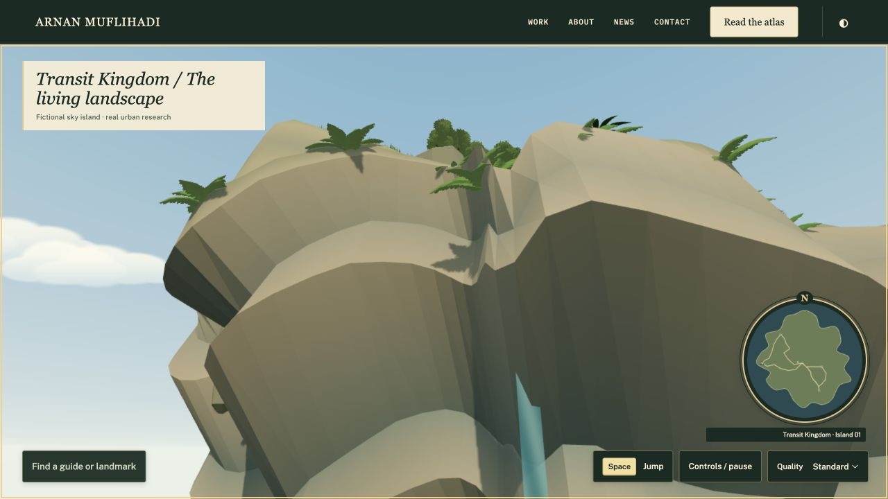

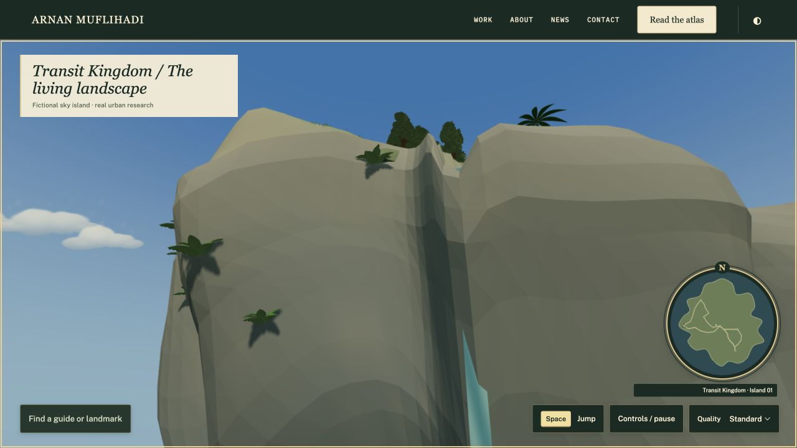
04 / Forest walking trail
Spreading and emergent crowns frame the unchanged route. Curved grass, shrubs and soil transitions give the foreground more variety.

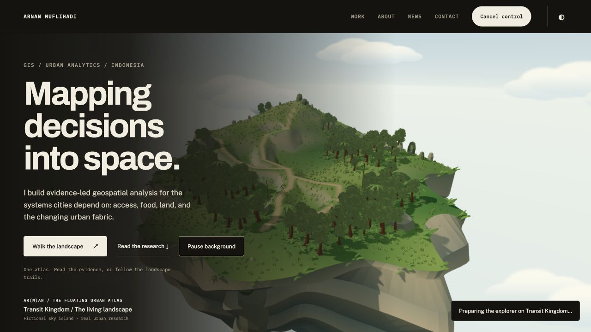

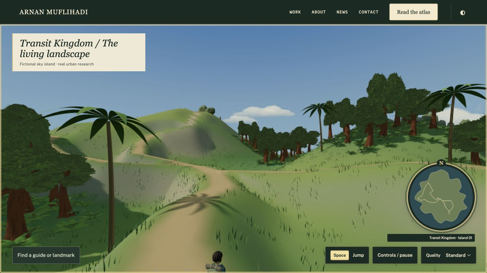
05 / Mountain ridge
The original rise and support mesh remain exact. Exposed ground, restrained ridge planting and a distant silhouette frame the route.

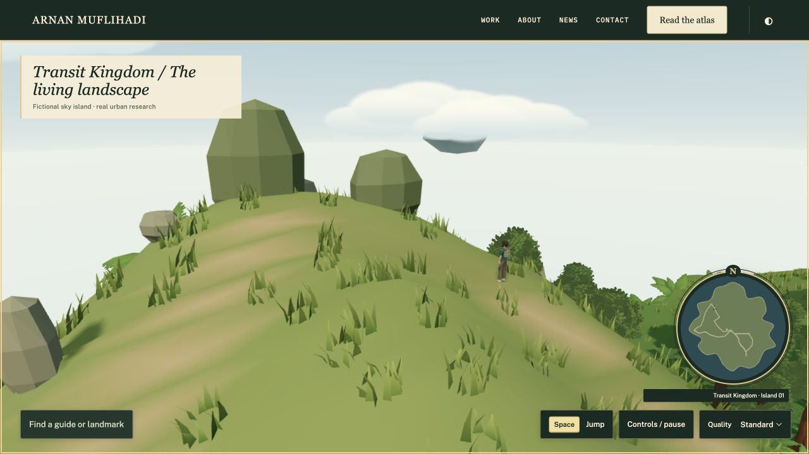

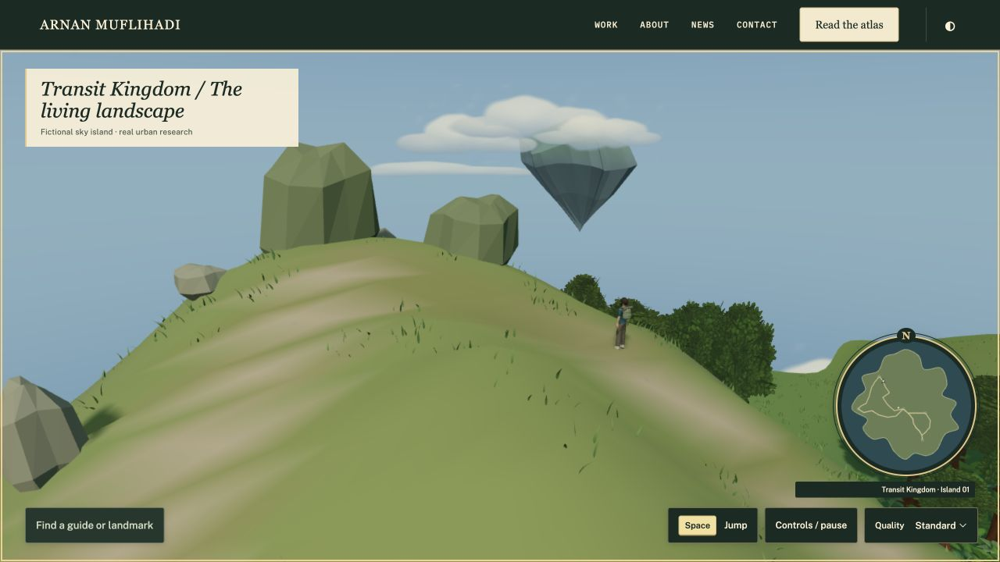
06 / Scenic overlook
The preserved western rim looks over the valley, forest and falling stream. This remains an unbuilt natural overlook.


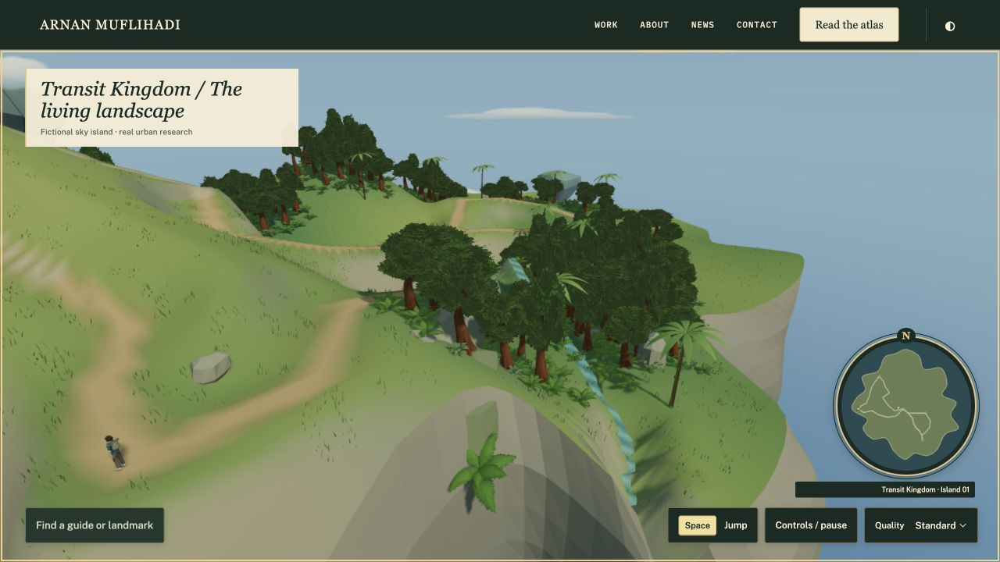
07 / Third-person player view
The unchanged explorer establishes character scale. New grass and understory stay clear of the playable trail.

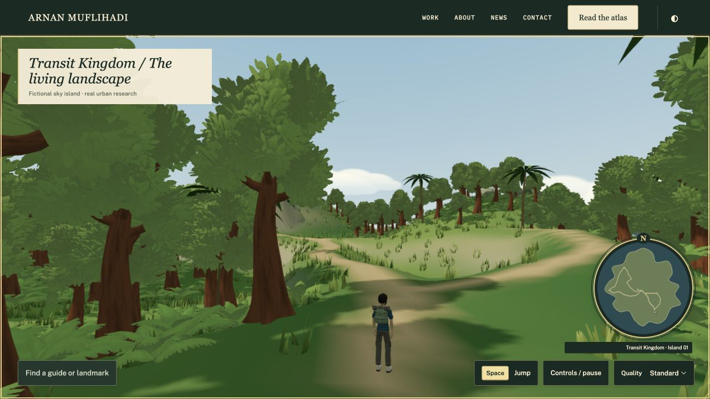

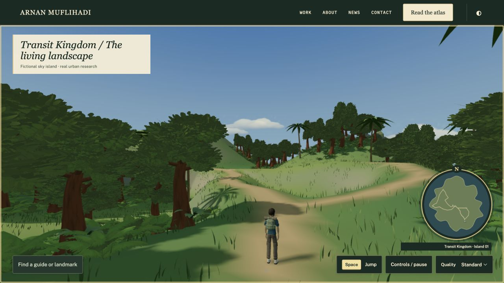
08 / Same world, editorial mode
The real research portfolio uses the same landscape. This pair uses a fixed editorial QA camera; normal scrolling still controls its usual composition.

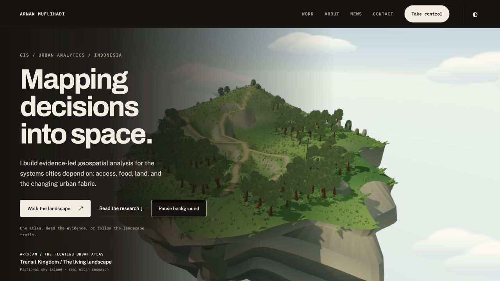

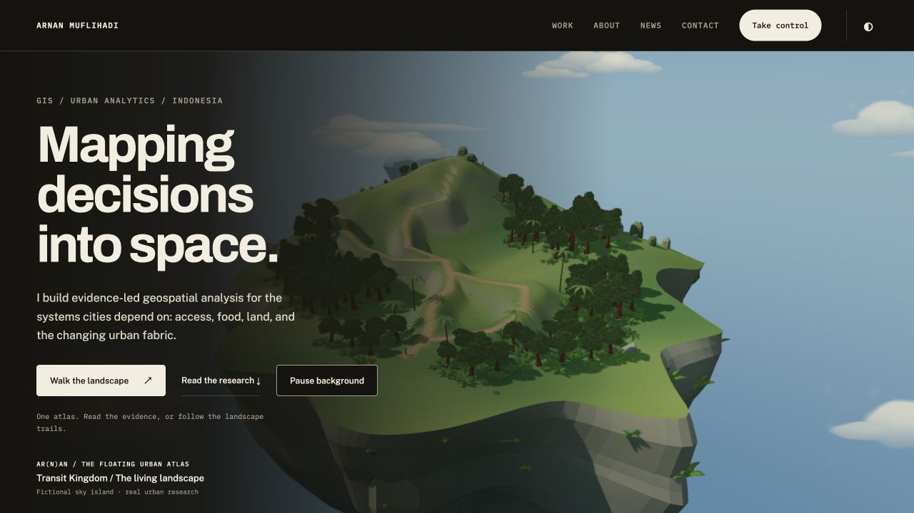
Measured behavior and cost
79/79 tests pass. All previous 77 remain. Native walking, running, jump/landing, pause, reduced motion, Eco, MBR and editorial/adventure handoff were checked. The handoff retains the exact player position, one scene and one renderer. No console warnings/errors or missing environment textures were captured.
| Moving view | Mean / p95 | FPS | Calls / triangles |
|---|---|---|---|
| Arrival / Standard | 8.3345 / 8.50 ms | 119.98 | 86 / 1,237,358 |
| Forest / Standard | 8.3355 / 8.40 ms | 119.97 | 77 / 1,201,034 |
| Arrival return / Eco | 8.3317 / 8.40 ms | 120.02 | 85 / 1,169,094 |
These are actual moving samples, not identical benchmark traces or a cross-device guarantee. Potential environment geometry rises 3.53% to 1,321,126 triangles; prebuilt distance detail limits submitted grass. The same five active GLBs total 3,859,228 bytes, with all six prior inventory hashes unchanged. No new third-party downloads. The static audit still fails with exactly 58 inherited findings, none added or resolved.
Test log · Moving-frame measurements · Gameplay and handoff · Actual loaded counts · Inventory and license paths · Research checks · Console log · Audit comparison
What still needs your review
Please judge the sky, geology, vegetation, ground materials and exploration composition. Broad low-poly cliff faces, inherited foliage texture and crown repetition, smooth slopes, sparse ridge planting, grass detail transitions, cloud silhouettes and the retained narrow waterfall ribbon remain visible review points. The captures do not conceal these areas.
Physical phones, cold-network loading and GPU frame times are not benchmarked. No architecture, additional playable island, flight, new NPC, quest, monster or shop is added.